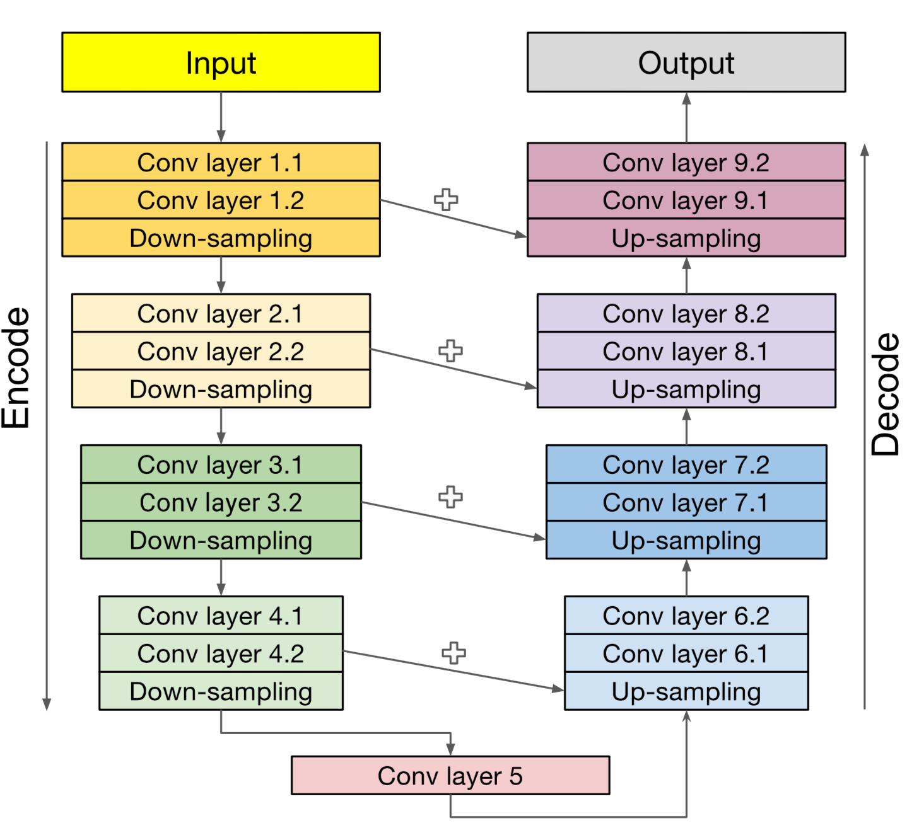
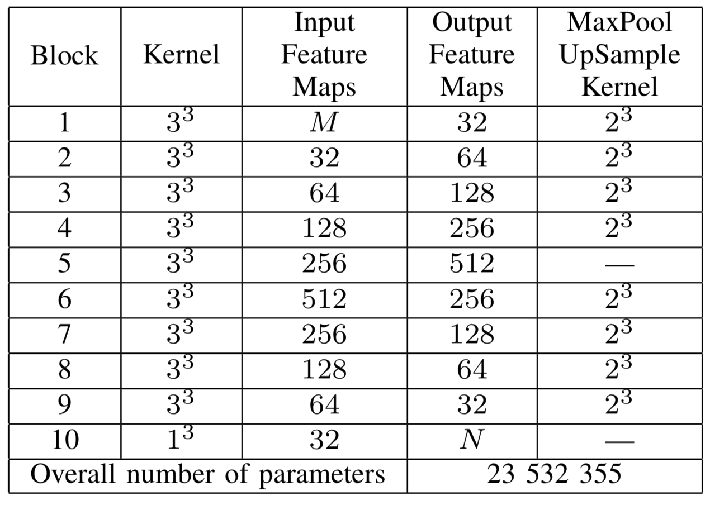
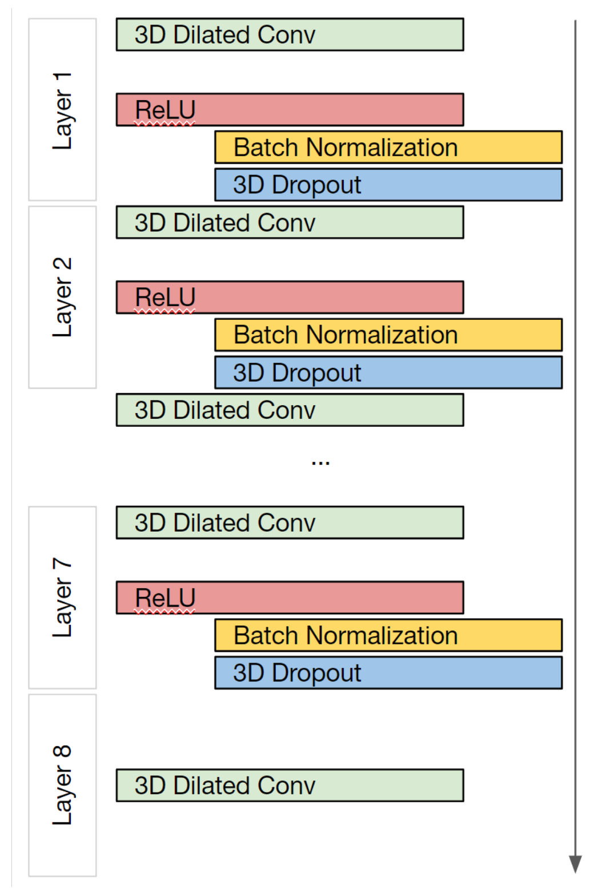
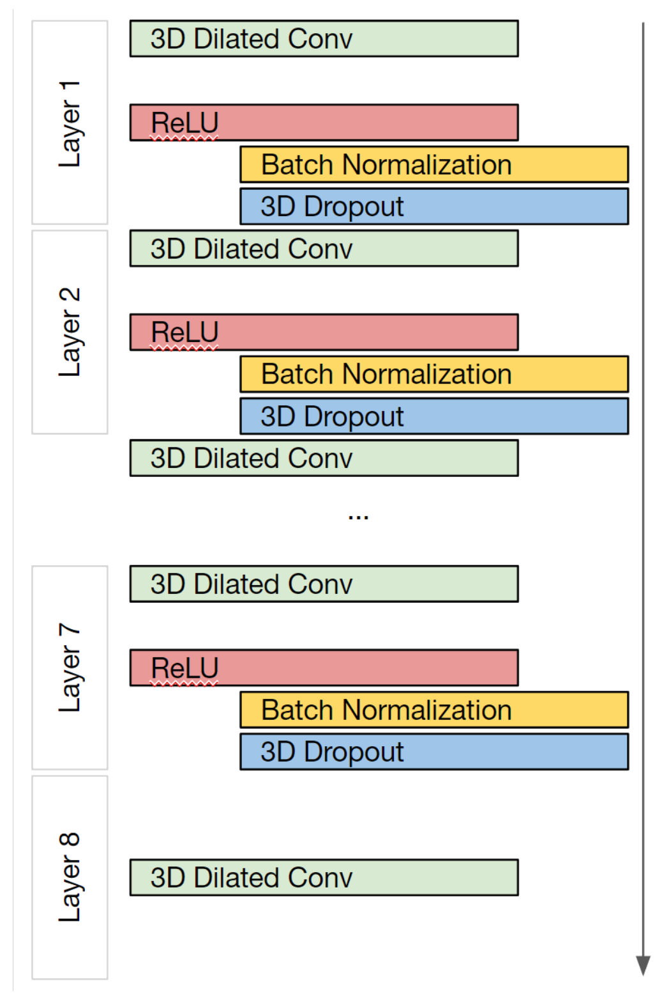

Semantic segmentation
the task

state of the art: freesurfer

deep learning standard: U-net

deep learning standard: U-net

Alex Fedorov
our model: Meshnet
 

- Gray and White matter
- FreeSurfer for ground truth
- T1 MRIs from HCP
- GitHub
https://github.com/Entodi/MeshNet
Meshnet

- 72516 vs. 23523355
- 600kb vs. 2Gb
an easy segmentation model
- compact and portable
- universal and adaptable
- code: https://github.com/Entodi/MeshNet
- It runs in browser!!!: brainchop.org

Mahfuz Rahman

Farfalla Hu
Will Ashbee